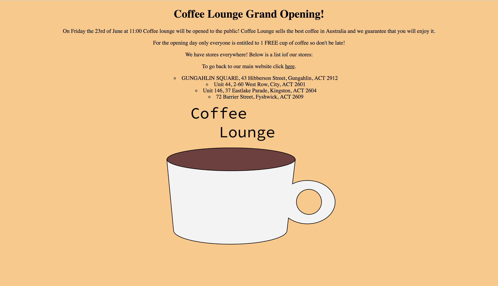

The 3rd of 4 stages in your epic Code Pupil adventure!
As you've learnt CSS stands for Cascading Style Sheets, and allows you to add style to your website and describes how to display the content.
In this lesson you hopefully gain a basic understanding of CSS!
There are 3 kinds of CSS that all have to the same syntax and affect. These are Inline CSS, Embedded CSS and External CSS.
CSS has an easy to learn syntax with all the modifications being made inside a selector. The selector is usually the element name, id, class which will be talked about later. The selector is marked out by braces which sit next to the selectpor. We can see this in the image below:
Inside the braces you write the property you want to want to change, a colon on the right, then a space. After this you write the value you are going to set the property to and after that you end the line with a semicolon. You can see this in the image below:
Inline CSS is done through the style attribute inside the element you want to syle. This form of styling is contained between quotaion marks and has no separate lines. This method makes it harder to read and understand your CSS but does make it so that you do not need to worry about selectors. Inline styling looks something like this:
Embedded CSS is done through the style element at the top of a html document in the head. The style element makes everything inside it format as CSS and is very useful for basic CSS, however it does make your html document harder to navigate and if you are creating a complicated website it is best to use external style sheets. You can see embedded html in use below:
External CSS is done through the creation of external style sheets which store all your CSS. Some benefits of using this method includes:
As you can see external CSS is a great option and that is why we are going to teach you it!
If you remember how to create a html document creating a css document isn't much different. Open up the Coffee lounge page and create a css document we are going to add some style to this page to make it more appealing to the customers.
You do this by right clicking in the left area of the screen below your html document and click New File
. Next type "style.css" into the file tab at the top of the screen like the image below, and then click enter!
This will create a CSS document like the one below:
Now we are going to link this css document to the html document by creating this tag inside the html in the head of the page:
This will make it so that the CSS in the document will effect the html document.
Selectors are very important in external and embedded CSS as they allow you to target specific sections of code and some are ideal for certain circumstances. There are 5 main selectors which you need to understand to be an awesome CSS styler.
The type selector selects any html element on the page that matches the selector no matter where the the element is located. This tag is really useful for general styling and being used in decendants styling.
The type selector is written by just writting the tag name without any of the parenthesis. You can see this selector in use below:
If you want to select an element that is inside another element then you can use the decendants selector. The decendants selector isn't too different of a selector and you need to know how other selectors work to use it. The decendants selector is written by writing two selectors next to each other with the space in between them. The selector will target any version of the second selector that lies inside the first selector. In HTML we call this nesting as the second element is nested
inside the first. You can see this selector in use below:
The universal selector targets everything on the html page no matter where the tags are located. This tag is preferable over using the body type selector alone as it doesn't take as long to load and means that the webpage is loaded faster. The universal selector is just an asterix.
These two selectors can be used to specifically target certain elements on the page without using a long decendants selector. These tags require an attribute which gives the tag a sepcific id or class that can be targetted in the CSS.
These two attributes both work the same and you can use either and it will still work. However, it is recommended that you should always use id's for 1 time use stlying and classes for multiple time use styling.
Below you can see how ids function in the HTML and CSS.
You can also see how classes function in the HTML and CSS
From the examples above you can see that classes are specified with a full stop and ids are specified with a hash tag (pound sign). These tags do take priority over the universal and type selector so you can easily make minor modifications to the webpage.
This selector is one of the less used selectors as most people find it hard to use and confusing. The adjacent selector requires two other selectors just like the decendants selector but it has a plus sign between these two selectors. This selector will target any of the second selector that is directly below the first selector. The below example shows how you can target every img tag that is directly after a p tag.
Here is a list of common properties that you will use in our Coffee Lounge project.
| What you are changing | The CSS property to specify this | Example | Notes on aspect |
|---|---|---|---|
| The font | font-family | font-family: Comic-sans; | This font is web safe meaning it will work on all web browsers, yay! |
| Text color | color | color: pink; | Instead of using the word for a color you can also use a rgb color or a hex color code. |
| Background color | background-color | background-color: purple; | I really like purple! |
| The decoration of text | text-decoration | text-decoration: italic; | This is not how you specify boldness! |
| The width of an element | width | width: 100px; | You can use width as a percent, pixel or even the view width! |
| The height of an element | height | height: 100px; | The vw and vh |
| Alligns the text to a side of the page | text-align | text-align: center; | There is also text align left and text align right |
| Specifies the type of bullet point for a list | list-style-type | list-style-type: square; | This is purely aesthetics and is mostly unnecessary. |
We have already touched on these tags a little but these tags are VERY important. These tags have no styling so they are very flexible and can be used really well in conjunction with classes and ids to create a super cool website.
Since divs have no styling you can use them to create shapes and divide parts of your page!
This page uses divs to divide up the page into individular sections that can be eaily styled. A div tag is used to group block level elements (elements that usually don't bend around each other and create their own line).
Some examples of block level elements include: p, img table and ul.
If an element is not block it is refered to as inline. These are usually i, strong and a tags which sit inside p tags or other block level elements. You can change this property using CSS!
Spans are used to group inline elements and without styling (like the div tag) provide no visible change. Spans are really useful for changing the color of text in places and creating unique styling effecfts like a font change.
Any pro coder must understand the importance of spans and classes.
We still need to make some modifications to the Coffee Liunge website by adding some style to the page to make it look more appealing to the customer.
Here is a list of what we still need to do:
Using the selectors we have taught you and the properties above follow the list to make your website look like this:
Click this link and learn some final tips about HTML and CSS coding!
This next lesson is the final lesson and there will be a major task at the end so make sure you are ready!